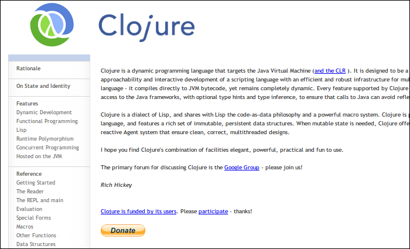

Programação Funcional e Concorrente para JVM com Clojure

Daniel Martins
Destaquenet Soluções em Tecnologia
@danielfmt • daniel@destaquenet.com • destaquenet.com
Proposta
Clojure é uma linguagem de programação funcional para JVM que vem crescendo muito em popularidade, apesar de ter sido criada há apenas dois anos. Esta linguagem, que possui muitas semelhanças com Lisp, dá a devida atenção a uma característica cada vez mais presente – e necessária – nos softwares modernos: concorrência.
Esta palestra dará aos participantes uma breve introdução à linguagem de programação Clojure, passando por aspectos importantes da Programação Funcional e mostrando como tais aspectos ajudam na solução de problemas corriqueiros de concorrência de uma forma simples e elegante.
Palestrante
Daniel Martins é graduado em Sistemas de Informação e desenvolve softwares como hobby e profissão desde 2000. Fundador da Destaquenet Soluções, uma empresa voltada à prestação de serviços baseados em software livre, ele possui especialização na plataforma Java e utiliza a tecnologia há vários anos, sendo programador e desenvolvedor web certificado pela Sun Microsystems. Também se interessa por assuntos ligados à cultura open source, metodologias ágeis, engenharia de software, frameworks e linguagens dinâmicas tais como Python, Ruby e, obviamente, Clojure.
URL: destaquenet.com
Email: daniel@destaquenet.com
Twitter: @danielfmt
O que eu espero conseguir com esta palestra
A idéia aqui não é dissecar a linguagem Clojure, até por que o tempo não permite. A idéia é mostrar alguns de seus recursos mais importantes. Assim, quem se interessar, pode pesquisar mais sobre ela.
Ilustração: Mumu da Mangueira programa em Clojure (Daniel Martins)
- Mostrar algumas áreas onde a linguagem se destaca
- Somente um aperitivo para despertar o interesse
- Dúvidas no final
Antes de começarmos…
Mas, antes de começarmos, eu queria saber umas coisas sobre vocês.
- Quem conhece programação funcional?
- Alguma linguagem específica? Lisp? Haskell?
Agenda
- Breve introdução à Clojure
- Clojure e Programação Funcional
- Concorrência: problemas e soluções
- Q&A
Ênfase na parte de concorrência, que é um dos recursos mais interessantes na linguagem.
- Isso é o que veremos hoje.
- Ênfase em concorrência, um dos sweetspots da linguagem
Hello World
(* (+ 2 4) 2)
=> 12
(defn avg [coll]
(if (empty? coll)
0
(/ (apply + coll) (count coll))))
(avg [])
=> 0
(avg [5 4 3 2 1])
=> 3
Sintaxe extremamente simples:
(metodo arg1 arg2 argN)
Esse tipo de sintaxe, difundida no Lisp, é conhecida como s-expression, notação composta basicamente de listas e símbolos. A notação pré-fixada também elimina a necessidade de regras obscuras de precedência de operadores como as que existem em Java e C.
Abaixo, definimos uma função (avg) que calcula a média da sequência de números fornecida como argumento. O (if) testa o argumento, retornando zero se a sequência for vazia/nula.
- Sintaxe simples, baseada em listas e símbolos (s-expressions)
- Prefixada, sem regras de precedência
Tipos de dados
Os mesmos de sempre.
Não vale a pena citar os tipos de dados da linguagem porque quase nada muda em comparação com outras linguagens.
- Os mesmos tipos de sempre
- Booleanos, caracteres, strings, números…
Estruturas de dados
| Vectors | → | [1 2 3 4]
|
|---|---|---|
| Lists | → | '(1 2 3 4)
|
| Sets | → | #{1 2 3 4}
|
| Maps | → | {:name "Daniel", :age 25}
|
Clojure conta com estruturas de dados imutáveis e persistentes. Veremos o que isso significa mais adiante.
Vector: Sequência indexadaList: Sequência principal da linguagemSet: Sequência sem duplicatasMap: Dicionário de pares chave-valor
Keywords, Maps, Sets e Vectors
Também são funções!
Em Clojure, alguns dos tipos de dados também atuam como funções.
Dados como funções
(def a-map {:name "Daniel", :age 25})
(:age a-map)
=> 25
(a-map :name)
=> "Daniel"
Esse recurso é muito usado com maps, que, como podemos ver, podem ser usados como funções que aceitam um argumento correspondente à chave e retornam o valor associado.
- Recurso idiomático muito usado em código Clojure
Mapaceita chave como argumento e retorna seu valorKeywordaceita oMapcomo argumento e retorna o valor associado a si
Lisp + Java
O melhor dos dois mundos.
Clojure é uma linguagem de programação dinâmica que roda na JVM, e foi projetada para ser uma linguagem de propósito geral, combinando a facilidade e o estilo interativo de desenvolvimento de linguagens de script com uma infraestrutura eficiente e robusta para programação concorrente. Clojure não é interpretada; ela compila diretamente para bytecode, ainda que seja completamente dinâmica.
Ainda, como um dialeto de Lisp, Clojure compartilha de características poderosíssimas para quem precisa de um ambiente favorável à meta-programação.
- Linguagem dinâmica para a JVM, de propósito geral
- Combina facilidade e estilo interativo com infraestrutura robusta para concorrência
- Não é interpretada, compila direto para bytecodes
- Dinâmica
- Clojure é um dialeto Lisp
Code as data / data as code
(def expression '(* (+ 2 3) 4))
=> (* (+ 2 3) 4)
(list? expression)
=> true
(count expression)
=> 3
(eval expression)
=> 20
Clojure é uma linguagem homoicônica, ou seja, as mesmas estruturas de dados usadas nos programas são usadas para representá-los internamente. Neste exemplo, criamos um List correspondente a uma expressão matemática. Para evitar que a expressão seja executada, prefixamos a mesma com um apóstrofo, fazendo com que a a estrutura de dados correspondente à expressão seja retornada.
Uma estrutura como essa pode ser avaliada com (eval), ou manipulada usando funções simples que operam em sequências. Não são necessárias bibliotecas próprias para transformação de Árvores Sintáticas Abstratas, como acontece em linguagens como Python e Ruby.
- É homoicônica, ou seja, o programa e sua representação interna usam as mesmas estruturas de dados
- Sem necessidade de biblioteca especial para AST
- Meta-programação no core da linguagem
Interoperabilidade com Java
(import '[java.util Calendar])
=> java.util.Calendar
(def cal (doto (Calendar/getInstance)
(.set Calendar/YEAR 1985)
(.set Calendar/MONTH Calendar/MAY)
(.set Calendar/DAY_OF_MONTH 1)))
(.getTime cal)
=> #<Date Wed May 01 09:11:42 BRT 1985>
Clojure também é conhecida pela forma com que ela interopera com a plataforma hospedeira.
Neste exemplo, como Clojure não fornece um conjunto de funções específicas para trabalhar com datas, usamos as classes Calendar já disponíveis na biblioteca padrão de Java.
Vale lembrar que Clojure permite também fazer coisas mais “avançadas”, como fazer coerção de tipos (inclusive primitivos), declarar classes, implementar interfaces, usar anotações, etc. Mas isso fica como exercício. :)
- Interoperabilidade total com Java e seu ecossistema
- Também suporta tipos primitivos, implementação de classes/interfaces, anotações, etc
Programação Funcional
Você não sabe que precisa dela até usá-la.
A filosofia por trás da linguagem é que a maior parte do código deve ser funcional, resultando em código mais simples, robusto, fácil de entender e testar.
- A filosofia é que a maior parte do código deve ser funcional
- Código simples, robusto, fácil de entender e testar
Os 3 Mandamentos da Programação Funcional
Todos de pé, por favor.
Linguagens imperativas, grupo que compreende as linguagens procedurais e orientadas a objetos, são bem diferentes das linguagens funcionais. Por isso, o estranhamento inicial é normal por parte de quem não está acostumado.
A seguir, veremos algumas das características mais marcantes das linguagens funcionais, e de Clojure em especial.
- Linguagens funcionais e imperativas
- Exige diferentes habilidades para solucionar de problemas
- Estranhamento inicial é normal
- As 3 principais características de linguagens funcionais
1º Mandamento
“Não mutarás.”
Assim como a mutabilidade é quase que uma constante em linguagens imperativas, a imutabilidade é quase que uma constante em linguagens funcionais.
Veremos o quanto esse detalhe faz diferença quando entrarmos no assunto “concorrência”.
- “Não mutarás”
- Mutabilidade = Linguagens Imperativas
- Imutabilidade = Linguagens Funcionais
- Muito importante quando falarmos sobre concorrência
Imutabilidade e Persistência (1)
(def numbers (range 5))
=> (0 1 2 3 4)
Ilustração: Daniel Martins
Todas as estruturas de dados fornecidas por Clojure são imutáveis e persistentes.
Imutabilidade e Persistência (2)
(def numbers (range 5))
=> (0 1 2 3 4)
(def numbers-2 (rest numbers))
=> (1 2 3 4)
Quando usamos funções como (rest), novas sequências são retornadas, preservando as versões anteriores; logo são imutáveis. Além disso, não são feitas cópias completas dos objetos; novos objetos e objetos antigos compartilham estrutura. Por isso dizemos que tais estruturas são também persistentes, que nesse caso nada tem a ver com bancos de dados.
Organizar os dados desta forma permite que as garantias de performance sejam em grande parte mantidas.
Ilustração: Daniel Martins
- Valores imutáveis
- Manipulações em valores retornam novos valores
- Podem ser compartilhados entre várias threads
- Valores persistentes
- Versões novas e antigas compartilham estrutura
- Garantias de performance mantidas (em grande parte)
2º Mandamento
“Não tratarás funções como cidadãos de segunda classe.”
Em linguagens funcionais, funções são como um valor qualquer. Isso significa que uma função pode operar e retornar tanto valores simples quanto sobre outras funções.
- “Não tratarás funções como cidadãos de segunda classe”
- Funções operam sobre valores e outras funções
- Funções retornam valores ou funções
Funções, funções, funções…
(defn divisible? [n d]
(zero? (rem n d)))
(defn is-even? [n]
(divisible? n 2))
(filter is-even? (range 10))
=> (0 2 4 6 8)
(filter (complement is-even?) (range 10))
=> (1 3 5 7 9)
Funções podem receber outras funções como argumento e retornarem outras funções. Por exemplo podemos filtrar os números pares em uma sequência passando a função (is-even?) a (filter). Ainda, podemos criar facilmente uma função inversa a (is-even?) com (complement).
- Função
(is-even?)usa(divisible?), nada anormal até aqui - Função
(is-even?)passada a(filter)para filtrar os números pares - Função
(complement)retorna nova função com retorno booleano invertido
3º Mandamento
“Verás na preguiça uma virtude.”
Lazy evaluation é uma técnica muito usada em linguagens de programação funcional, e consiste em adiar uma computação até que seu resultado seja requisitado.
Além de evitar que tempo de CPU seja gasto com computações que poderão não ser utilizadas, esta técnica também permite, por exemplo, a criação de sequências infinitas.
- “Verás na preguiça uma virtude”
- Lazy evaluation
- Computar somente o necessário, quando necessário
- Sem perda de tempo com computações desnecessárias
- Sequências infinitas
Estruturas de dados “lazy”
(defn echo [n]
(println n) n)
(def my-numbers
(map echo (range 3)))
(doall my-numbers)
0
1
2
=> (0 1 2)
(doall my-numbers)
=> (0 1 2)
Em Clojure, diversas funções retornam estruturas de dados lazy, isto é, estruturas cujos elementos só serão computados (e cacheados) quando — e se — estes forem requisitados.
- Várias funções retornam sequências lazy (ex:
(filter)) - Valores computados uma vez e cacheados
(doall)força a avaliação dos elementos de uma sequência
Project Euler #1
“Encontre a soma de todos os múltiplos de 3 ou 5 menores que 1000.”
http://projecteuler.net/index.php?section=problems&id=1
Vamos mostrar todos esses conceitos na prática.
Project Euler #1 – Solução
(defn divisible? [n coll]
(some #(zero? (rem n %)) coll))
(divisible? 8 [3 5])
=> nil
(divisible? 10 [3 5])
=> true
(reduce +
(filter #(divisible? % [3 5]) (range 1000)))
=> 233168
Primeiro, definimos a função (divisible?), que serve para dizer se n é divisível por qualquer número em coll. A sintaxe #(...) serve para definir funções anônimas, e % se refere ao único parâmetro recebido por essa função.
Depois, fazemos alguns testes para ver se a função funciona mesmo e, por último, a usamos para resolver o problema proposto em três passos: 1) criamos a lista com todos os números possíveis; 2) filtramos os números desejados; e 3) calculamos a soma.
Esse simples exemplo mostra tudo: ausência de estado mutável, funções de primeira classe e sequências lazy (com (range) e (filter)).
- Decompor o problema em partes menores
- Solução em três passos
- Imutabilidade, funções de 1o nível, lazy evaluation
O mundo dá voltas
Nem tudo é sempre do mesmo.
Muito falamos das vantages da programação funcional, com suas funções puras e estruturas de dados imutáveis. Mas e quanto às desvantagens?
A principal delas é que o mundo onde vivemos não é tão previsível quanto uma simples equação matemática; aplicações não triviais tem comportamento perceptível ao longo do tempo, e isso vai de encontro alguns princípios da programação funcional.
- Programação Funcional também tem suas desvantagens
- Programas não triviais não são caixas-pretas
- Mudanças ocorrem o tempo todo e influenciam seu funcionamento
- Inerentemente incompatível com alguns princípios da programação funcional
Mutablidade e Concorrência
Uma mistura pior que Créu e Rebolation.
Na verdade, a mutabilidade por si só não é o diabo. O problema é quando abusamos dela, principalmente num contexto onde podemos ter várias threads acessando os mesmos objetos.
- Mutabilidade é ruim?
- É ruim quando não existe controle
- Misture threads = Dança do Créu
1º Exemplo
Gerador de números sequenciais.
Vamos ver, a partir de agora, alguns exemplos de programas concorrentes, e de como a coisa pode ficar feia se não tomarmos certos cuidados.
Gerador de números únicos
public class NumberGenerator {
private long current = 0L;
public long getNext() {
return ++this.current;
}
}
Temos aqui uma classe que gera números sequenciais únicos. Alguém consegue ver algo de errado nesse código?
O método getNext() tem apenas uma linha de código e passa a falsa impressão de ser atômico e threadsafe…
- Método
getNext()não sincronizado - Mas ele só tem uma linha, que problema isso pode dar?
Pegadinha do Mallandro!
“Rááááááááááááááááááááááááááá!!”
Foto: Sérgio Mallandro (Desconhecido)
Race condition
public long getNext();
Code:
Stack=5, Locals=1, Args_size=1
0: aload_0
1: dup
2: getfield #2; //Field current:J
5: lconst_1
6: ladd
7: dup2_x1
8: putfield #2; //Field current:J
11: lreturn
LineNumberTable:
line X: 0
...mas só parece ser.
Quando a classe é compilada para bytecodes, o conteúdo do método getNext() é decomposto em várias outras instruções; entre uma instrução e outra, o escalonador pode permitir que outra thread rode concorrentemente, fazendo com que o método retorne o mesmo número várias vezes.
- Mesmo instruções simples são compostas de várias instruções de “baixo nível”
- Em qualquer uma, a thread atual pode parar e dar lugar a outra
- Race condition
Locks
Sempre proteja acesso a estado mutável!
A solução é sempre usar locks para proteger o acesso a estado mutável.
Uma forma de resolver o problema é sincronizar o método getNext().
Sincronizando acesso a recurso mutável
public class NumberGenerator {
private long current = 0L;
public synchronized long getNext() {
return ++this.current;
}
}
Isso evita que várias threads possam rodar o mesmo método no mesmo objeto ao mesmo tempo.
Identidade ≠ Valor ≠ Estado
“The ass has nothing to do with the pants.”
Conceitos que são misturados em linguagens imperativas são separados em Clojure.
Em linguagens de programação imperativas, referências apontam diretamente para pedaços de memória onde os valores mutáveis se encontram. Isso significa que tudo pode ser modificado por qualquer um a qualquer momento. Não podemos sequer saber se o estado atual de um objeto é válido ou se é um valor em transição!
- Clojure separa conceitos que são misturados em outras linguagens
- Em linguagens imperativas:
- Referências apontam para endereços de memória
- Tudo pode mudar um valor, a qualquer momento
- Como saber se o valor atual é correto ou é um valor em transição?
Atoms, Refs, Agents
Concorrência para todos os gostos.
Em Clojure, essa separação é feita através de uma entidade chamada Reference, que nada mais é que uma camada extra de indireção para um valor imutável. A grande vantagem das References é que elas devem ser modificadas de forma controlada.
As References se dividem em quatro tipos, sendo que, à partir de agora, veremos os três mais importantes.
- Clojure separa esses conceitos com References
- Camada de indireção para valores imutáveis
- Mudar uma Reference é fazê-la apontar para outro valor imutável
- Mutabilidade sem suas desvantagens
Atoms
Para atualizações síncronas e não-coordenadas.
O primeiro tipo de Reference são os Atoms, cuja função é permitir alterações síncronas e independentes (não coordenadas), e são perfeitas para a criação do nosso gerador de números.
- Atom: o tipo mais simples de Reference
- Alterações síncronas e independentes, sem locks
- Perfeita para o nosso primeiro problema
Solução – Gerador de números únicos (1)
(def a-number 10)
(def counter (atom a-number))
@counter ;; (deref counter)
=> 10
Perceba que o Atom funciona como uma camada de indireção para o valor (imutável, vale ressaltar) a ser controlado. Isso é assim também com as outras References que veremos mais adiante.
Ilustração: Daniel Martins
- Reference é uma simples camada de indireção para um valor imutável
- Leitura do valor com
@ ou(deref)
Solução – Gerador de números únicos (2)
(def a-number 10)
(def counter (atom a-number))
@counter ;; (deref counter)
=> 10
(swap! counter inc)
=> 11
Para trocar o valor de uma Reference, basta fazê-la apontar para outro valor imutável. Por isso, mesmo mudanças complexas ocorrem de forma “atômica”, sem que ninguém leia um valor intermediário.
No caso dos Atoms, é a função (swap!) que faz a mágica. Internamente, o que a função (swap!) faz é ler o valor atual do Atom, aplicar a função a ele, e o substituir pelo valor retornado. Como outra thread pode ter alterado o Atom nesse meio tempo, esse processo se repete até que não haja alterações conflitantes. Portanto, as alterações são livres de race conditions.
Para quem está familiarizado com a API java.util.concurrent.*, essa função usa internamente o método compareAndSet(), da classe AtomicReference.
Ilustração: Daniel Martins
(swap!)troca o valor de um Atom de forma atômica- Não bloqueia outras threads
2º Exemplo
Transferência bancária.
Muito fácil até aqui, não? Não poderia ser diferente, afinal estamos lidamos com apenas um recurso compartilhado.
Para mostrar o quão feia a coisa pode ficar, veremos um exemplo um pouquinho mais elaborado.
- Sincronizar apenas um recurso é fácil
- Próximo exemplo: transferência bancária
Transferência bancária
public class Account {
private double balance;
public void withdraw(double amount) {
this.balance -= amount;
}
public void deposit(double amount) {
this.balance += amount;
}
public void transferTo(Account to, double amount) {
this.withdraw(amount);
to.deposit(amount);
}
}
Temos aqui um exemplo de classe que representa uma conta bancária com as três operações básicas: saque, depósito e transferência.
- Eis um exemplo de implementação
- Perceberam algo errado?
Já esqueceu, é?
♪ “Synchroniza-tion-tion…” ♪
Para evitar o problema que vimos no exemplo anterior, lembre-se que devemos sincronizar os métodos que acessam recursos compartilhados.
- Devemos sincronizar os métodos para evitar race conditions
Transferência bancária – nova tentativa
public class Account {
private double balance;
public synchronized void withdraw(double amount) {
this.balance -= amount;
}
public synchronized void deposit(double amount) {
this.balance += amount;
}
public synchronized void transferTo(Account to, double amount) {
this.withdraw(amount);
to.deposit(amount);
}
}
Além disso, para tornar o procedimento de transferência bancária atômico, o método transferTo() também foi sincronizado.
- Pronto, sincronizado!
- Inclusive o método
transferTo(), para tornar a operação “atômica”
- Inclusive o método
- Isso basta, certo?
Pegadinha do Mallandro!
“Rááááááááááááááááááááááááááá!!”
Foto: Sérgio Mallandro (Desconhecido)
Deadlock
"Thread-2": at Account.deposit(BankingWrong2.java:89) - waiting to lock <0xaca831b8> (a Account) at Account.transferTo(BankingWrong2.java:104) - locked <0xaca831d0> (a Account) at BankingWrong2$2.run(BankingWrong2.java:20) at java.lang.Thread.run(Thread.java:619) "Thread-1": at Account.deposit(BankingWrong2.java:89) - waiting to lock <0xaca831d0> (a Account) at Account.transferTo(BankingWrong2.java:104) - locked <0xaca831b8> (a Account) at BankingWrong2$1.run(BankingWrong2.java:13) at java.lang.Thread.run(Thread.java:619) Found 1 deadlock.
No método sincronizado transferTo() há uma chamada a withdraw(), no mesmo objeto, e a deposit(), também sincronizado, no objeto recebido via parâmetro.
Portanto, se transferTo() for chamado na conta A para a conta B, e ao mesmo tempo, transferTo() for chamado na conta B para a conta A, voilá: temos um deadlock!
- Deadlock!
a.transferTo(b, x)eb.transferTo(a, x)rodarem ao mesmo tempo
Lock ordering
Object tie = new Object();
public void transfer(Account from, Account to, double amount) throws Exception {
Account a1 = from, a2 = to;
boolean useTie = true;
int hashFrom = System.identityHashCode(from);
int hashTo = System.identityHashCode(to);
if (hashFrom > hashTo) {
useTie = false;
}
if (hashFrom < hashTo) {
a1 = to; a2 = from; useTie = false;
}
if (useTie) {
synchronized (tie) {
synchronized (a1) {
synchronized (a2) {
from.withdraw(amount); to.deposit(amount);
}
}
}
} else {
synchronized (a1) {
synchronized (a2) {
from.withdraw(amount); to.deposit(amount);
}
}
}
}
Sincronizar um único recurso, como mostramos no problema anterior, é algo muito simples de ser feito. Aumente o número de recursos para 2 (ou mais) e veja que rapidamente as coisas começam a sair do controle.
Aqui foi preciso usar uma técnica (gambiarra) conhecida como lock ordering, que consiste em determinar a ordem na qual os locks são obtidos afim de evitar ciclos que levem a deadlocks.
E o método, que tinha apenas 4 linhas de código, agora tem quase 30. Um pequeno aumento de ~650% LOC!
- Fazer isso funcionar em Java dá trabalho
- Aumento de ~650% LOC!
- Solução possível usando lock ordering
- Reservar locks sempre na mesma ordem evita deadlock
Sai de ré
Sem condições. Precisamos arranjar um jeito de alterar vários recursos dentro de uma unidade lógica de trabalho, e garantir que, em caso de falhas, nenhuma das alterações seja confirmada, ou, em caso de sucesso, que todas as alterações se tornem públicas de uma só vez.
Ilustração: Fuuu Gogh (Fat Mouse)
- Tem que haver uma solução mais simples
- Unidade lógica de trabalho com garantias transacionais
- Tudo deve falhar (ou suceder) ao mesmo tempo
Software Transaction Memory
Atomicidade, Consistência, Isolamento.
Felizmente, existe algo parecido em Clojure.
A unidade de trabalho a que me referi é implementada por um componente chamado STM, ou Software Transactional Memory, que é responsável por fornecer semântica transacional semelhante a encontrada em bancos de dados relacionais.
As Refs, o segundo tipo de Reference que veremos hoje, são necessárias quando precisamos realizar alterações síncronas e coordenadas com o auxílio da STM. Esse tipo de Reference é perfeita para resolvermos esse problema de transferência bancária.
- Refs: O segundo tipo de Reference
- Trazem essa semântica transacional aos nossos programas
- Alterações síncronas e coordenadas, sem locks
Transferência bancária – Solução
(def my-account (ref 100))
(def your-account (ref 100))
(defn withdraw [account-ref amount]
(alter account-ref - amount))
(defn deposit [account-ref amount]
(alter account-ref + amount))
(dosync
(withdraw my-account 10.0)
(deposit your-account 10.0))
[@my-account @your-account]
=> [90.0 110.0]
Criamos neste exemplo duas Refs, uma para cada conta, e definimos as operações suportadas. Vejam que essas operações usam (alter) para alterar o valor de uma Ref, da mesma forma que se usa (swap!) para alterar o valor de um Atom. A única diferença é que (alter) deve ser chamada sempre dentro do contexto de um (dosync), que é quem determina o escopo da unidade de trabalho.
Novamente, não foi necessário usar locks; Clojure cuida disso para nós.
(alter)altera o valor de uma Ref- Deve ser sempre chamada dentro de
(dosync)- Define o escopo da unidade de trabalho
- Sem locks, novamente
Ref – Workflow
Cada thread tem sua própria visão do mundo das Refs através de snapshots. Dessa forma, uma thread não consegue ver as alterações feitas por outra até que esta confirme a transação. Além disso, um bloco (dosync) pode ser executado mais de uma vez caso outra thread modifique uma Ref.
Em ambientes onde existem muitas threads alterando as mesmas Refs a todo instante, temos uma perda de performance por conta desse loop, o que é aceitável considerando que temos um código extremamente simples (livre de race conditions e deadlocks).
Ilustração: Daniel Martins
- Cada thread tem seu snapshot do mundo
- Mudanças só se tornam públicas após o commit
(dosync)roda novamente quando detecta updates conflitantes- Muitas escritas + poucas Refs = maior contenção = menor performance
- Custo baixo comparado às vantagens
Esqueceu da transação?
Sem problemas.
(withdraw myAccount 10)
=> java.lang.IllegalStateException: No transaction running (...)
E se eu esquecer de colocar os (alter) dentro de um (dosync), meu programa vai falhar silenciosamente? Não! Tentar modificar referências fora de uma transação resulta em exception.
- Usar
(alter)fora de(dosync)resulta em exception - Sem falhas silenciosas
3º Exemplo
Baixador de capas de discos.
Partindo para o último exemplo de hoje, que envolve a execução de tarefas assíncronas (em paralelo).
- Exemplo: cover art downloader
- Execução de tarefas assíncronas
HTTP client assíncrono
for (final PlaylistEntry track : myPlaylist) {
new Thread(new Runnable() {
public void run() {
try {
// Pesquisa a capa na internet e faz o download
fetchCoverArt(track);
}
catch (Exception e) {
// ...
}
}
}).start();
}
Imaginem que temos que baixar a capa dos discos de milhares de músicas. Esta seria uma forma eficiente de resolver o problema?
- Criar threads para fazer o trabalho em paralelo
- É uma boa solução?
Existe um limite para tudo
Evite fazer algo assim! A ideia é ruim pois podemos acabar criando mais threads que o necessário, sem falar que threads puras não fornecem sistemas confiáveis para tratamento de erros, cancelamento de tarefas, entre outras coisas.
De qualquer modo, os recursos poderiam ser melhor aproveitados se usássemos uma thread pool.
Foto: Phill Cotterill
- Jamais faça isso!
- Muitas jobs muito longas = sobrecarrega o sistema como um todo
- Muitas jobs muito curtas = muitas threads desnecessárias
- Thread pool: melhor utilização dos recursos
java.util.concurrent.*
Mais difícil do que parece.
Quando precisamos realizar ações assíncronas, a API java.util.concurrent.* oferece um conjunto de classes e interfaces que nos dá mais controle para resolver problemas como esse, mas ela não é para qualquer um, já que seu uso involve uma série de classes e interfaces.
- A nova API ajuda, mas ainda não é para qualquer um
- API extensa: Executor, ExecutorService, Future, Runnable, etc
Agents
Complexidade na medida certa.
Agents servem justamente para o caso de precisarmos fazer atualizações assíncronas e independentes. Com um conjunto reduzido de funções, podemos aproveitar os recursos existentes na API java.util.concurrent.* para tal, de uma forma simples; Clojure cuida das partes chatas, como criar e manter thread pools separados para jobs normais e jobs de I/O, entre outras coisas.
- Atualizações assíncronas e indepentes
- Agents usam a API
java.util.concurrent.*por baixo dos panos - Gerenciamento automático de thread pool, executors, etc
- Funções simples para criar Agents, enfileirar ações e tratar erros
Cover art downloader – Solução
(def some-track
{:artist "Massacration", :album "Good Blood Headbangers", ...})
(defn cover-art-agent [track]
(let [track-agent (agent track)]
(send-off track-agent update-cover-art)))
(defn update-cover-art [track]
(assoc track :cover-art (fetch-cover-art track)))
(def track-agents
(doall (map cover-art-agent my-playlist)))
Aqui, representamos cada item da playlist como um Map que contém o nome da música, o artista, o nome do álbum, entre outras coisas.
A função cover-art-agent cria um Agent para uma determinada música e pede que esse Agent rode a função update-cover-art em paralelo. Esta função, por sua vez, faz o download da capa do disco com fetch-cover-art e atualiza o Map da música com essa informação.
Por último, a função (cover-art-agent) é chamada para cada música da playlist. Como a função (map) retorna uma sequência lazy, tomamos o cuidado de passar o resultado para (doall), forçando a criação dos Agents.
- Música da playlist representada por um
Map - Função
cover-art-agentcria um Agent para uma música e pede que a funçãoupdate-cover-artseja executada em paralelo para ela - Um tempo depois, a capa é baixada e o
Mapé atualizado com a nova informação
Problemas acontecem
Toda hora é hora.
Usar Agents em Clojure parece ser muito simples, mas e em caso de erros? O que acontece se uma ou mais ações enviadas a Agents falhem por quaisquer motivos?
Quando trabalhamos com tarefas assíncronas, precisamos sempre que possível tratar possíveis erros.
- Código simples, mas não mostra como lidar com possíveis erros
- Tratamento de erros é essencial em tarefas assíncronas
Cover art downloader – Tratamento de erros
(send-off failed-agent update-cover-art)
=> java.lang.RuntimeException: Agent is failed, needs restart
(agent-error failed-agent)
=> #<ConnectException java.net.ConnectException: connection refused>
(restart-agent failed-agent track)
=> {:artist "Massacration", :album "Good Blood Headbangers" ...}
(send-off failed-agent update-cover-art)
;; Algum tempo depois...
@failed-agent
=> {:cover-art #<File...>, :artist "Massacration" ...}
Por exemplo, imagine que uma ação enviada ao Agent failed-agent tenha lançado uma exception. Neste caso, enviar novas ações a tal Agent resulta em exception até que o mesmo seja reiniciado com (restart-agent).
Com a função (agent-error) podemos saber qual foi a exception lançada e tomar precauções para que isso não ocorra novamente.
- Agent não aceita outras ações após uma delas resultar em erro
- A função
(agent-error)retorna qual foi a exception lançada
- A função
- Agent volta a aceitar ações após
(restart-agent)
Power Refs
Validators, Error Handlers, Watchers…
As References são capazes de muito mais do que o mostrado aqui. Por exemplo, qualquer tipo de Reference pode especificar uma função validadora, e sempre que o seu valor for alterado, essa função servirá para permitir ou negar a alteração com base nas regras que você especificar.
Os Agents também podem especificar uma função a ser chamada sempre que uma ação enviada a eles lance uma exception. Assim, podemos tratar o erro e reiniciar um agent num único passo.
- As References são capazes de muito mais
- Vimos apenas o básico do básico
Isso foi só o começo
- destructuring
- namespaces
- multimethods
- macros
- protocols
- etc…
Tratamos aqui hoje apenas uma parte do que a linguagem oferece. O tempo é curto…
- Clojure tem muito mais a oferecer
Referência – Clojure.org

O próprio site oficial de Clojure possui links que guiam para wikis, fóruns, vídeo-aulas e IRC.
- Site oficial da linguagem
Recomendação – Clojure: Functional Programming for the JVM
http://java.ociweb.com/mark/clojure/article.html
Excelente artigo disponível na web, dá uma introdução aos vários recursos da linguagem.
- Artigo grátis, boa introdução
Recomendação – Programming Clojure
http://www.pragprog.com/titles/shcloj/programming-clojure
Excelente livro para quem nunca viu Clojure e tem pouca experiência com programação funcional.
- Bom para quem é novo tanto em Clojure quanto em programação funcional
Recomendação – The Joy of Clojure

Recomendo este livro para quem já escreveu pelo menos algumas linhas de código em Clojure.
- Livro mais completo e atualizado
Obrigado!
Daniel Martins
Destaquenet Soluções em Tecnologia
@danielfmt • daniel@destaquenet.com • destaquenet.com

É isso aí, espero que tenham gostado! Se tiverem qualquer dúvida, estamos aí.
- Perguntas?